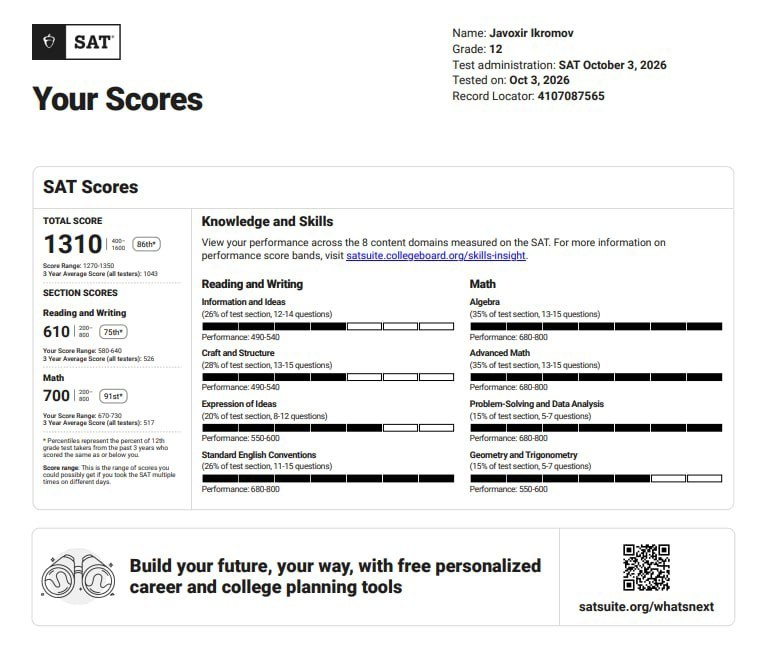

Summary
I built a free platform for students who cannot afford tutors, and studied how young people make money last.
1,310SAT · Math 700, 91st pct.
7.0IELTS Academic · C1
1,500chosen nationwide of ~30,000
+20.2%accuracy gain, 5 students
Work
2025 – 2026
Founder
Founder
Finaris, a free practice platform
Realistic finance, math and reasoning tests at finaris.uz. Founder and front-end design lead; more than 25 weeks to build; hundreds of students use it free.
2026
Research
Research
Behavioral finance study, 54 students
Under review for publication. Unplanned purchases predicted running out of money.
2026
Mentoring
Mentoring
SAT English marathon, 5 students
Tested, analysed errors, explained each. Average accuracy +20.2% after three lessons.
Documents
 Agency letter, 27 Oct 2026
Agency letter, 27 Oct 2026
SAT score report Penn, Fundamentals of Finance
Penn, Fundamentals of Finance